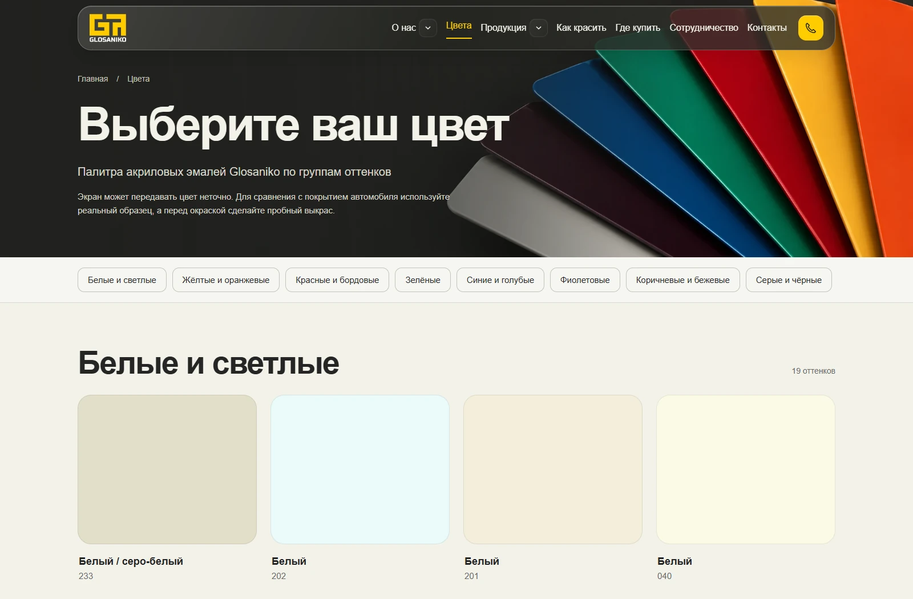
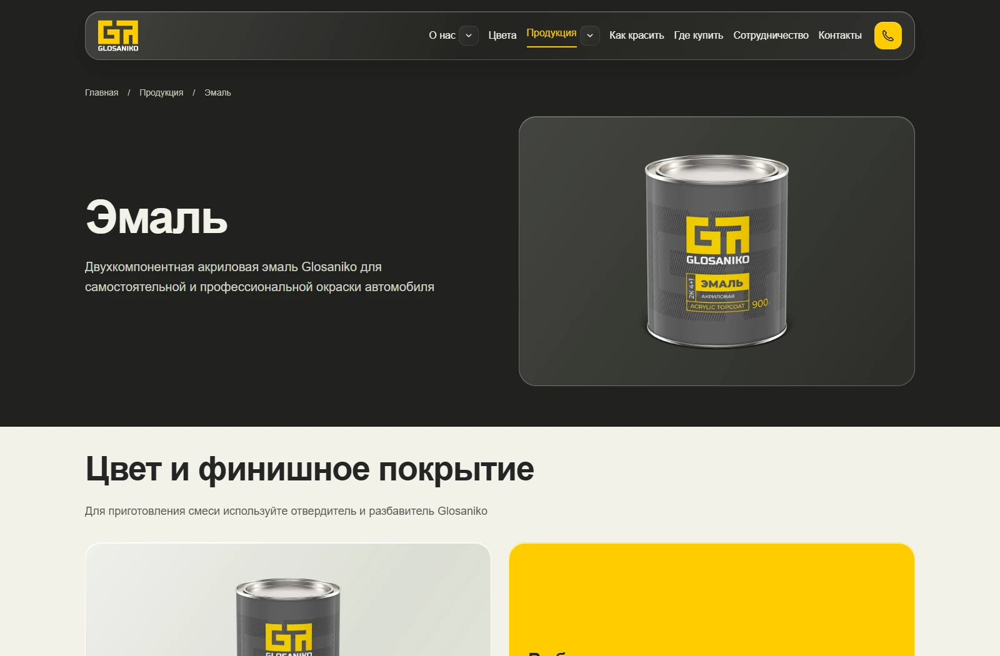
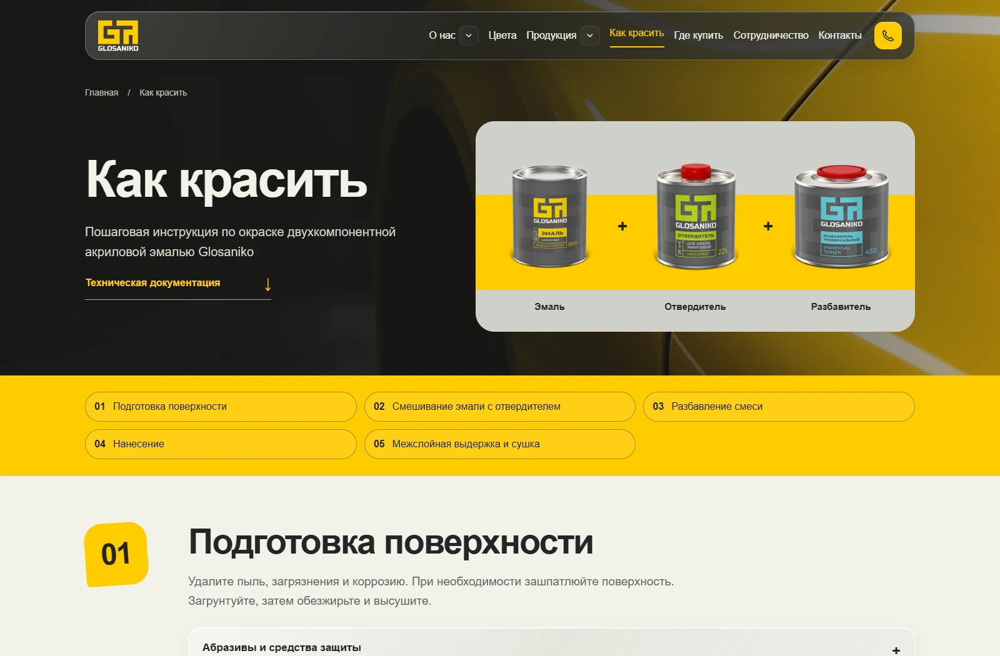
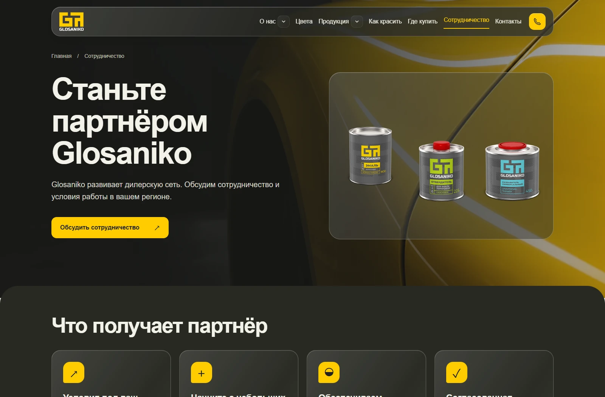
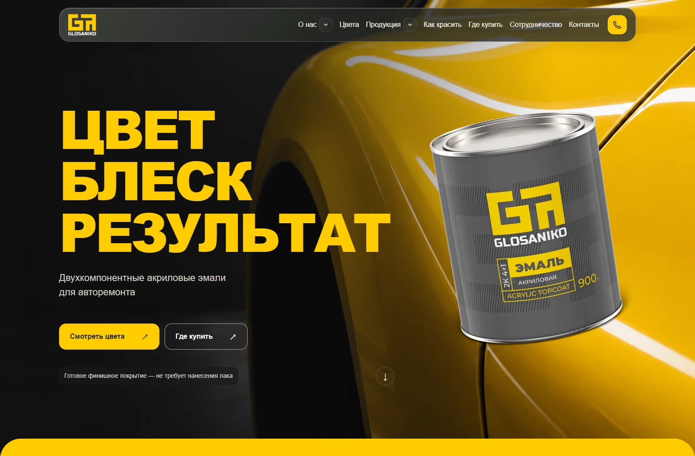

Автомобильные материалы с характером
Glosaniko — бренд автомобильных лакокрасочных материалов. Для него нужен был современный многостраничный сайт, который выделяется среди конкурентов и помогает двум аудиториям: покупателям продукции и будущим дилерам.
Клиент предоставил брендбук и фирменные материалы. На этой основе мы разработали визуальную концепцию и собрали сайт на Тильде — от структуры и дизайна до наполнения каталога.
Один сайт — два сценария
Покупателю важно разобраться в продукции, выбрать цвет и понять, где купить материал. Потенциальному партнёру — оценить бренд и возможности сотрудничества. Эти задачи объединили на одном сайте, но предусмотрели для них разные пути.
Выбрать и купить
Каталог продукции и цветов, инструкции, переходы на маркетплейсы и поиск дилера в своём регионе.
Начать сотрудничество
Отдельный раздел, который представляет преимущества работы с брендом и помогает обратиться по вопросам дилерства.
От выбора цвета — к покупке
Реализовали полноценный каталог продукции и цветов. Пользователь может познакомиться с материалами, перейти к палитре и выбрать подходящий оттенок. Для покупки предусмотрены переходы на маркетплейсы и поиск дилеров по регионам.
Технические инструкции вынесли в отдельный раздел. Он помогает разобраться в работе с материалами: от подготовки поверхности и смешивания до нанесения и сушки.






Отдельный раздел для дилеров
Для B2B-аудитории создали раздел сотрудничества. Он представляет преимущества партнёрства и ассортимент бренда, а также даёт возможность обратиться по вопросам работы в своём регионе.
Так сайт решает не только задачу презентации продукции, но и задачу привлечения новых дилеров.


Полный цикл за 20 рабочих дней
За 20 рабочих дней прошли путь от брифа и аналитики до дизайна, разработки, наполнения и релиза. Основной объём работы команда взяла на себя.
- Бриф, аналитика и структураРазобрали задачи бренда и двух аудиторий, сформировали структуру будущего сайта.
- Визуальная концепцияНа основе брендбука нашли оформление, которое передаёт характер Glosaniko.
- Контент и изображенияПодготовили каталог по материалам заказчика, создали продуктовые изображения и автомобильные сцены с помощью ИИ.
- Разработка на ТильдеСобрали страницы, каталог, интерактивные блоки, инструкции и раздел сотрудничества.
- Наполнение и релизНаполнили сайт. Клиенту осталось актуализировать отдельные ссылки на маркетплейсы и информацию о дилерах.
Цвет, блеск и эффект жидкого стекла
Уникальную визуальную концепцию построили на предоставленном брендбуке. Выразительный дизайн поддержали эффектом жидкого стекла, интерактивными блоками и плавными анимациями.
Продуктовые изображения и автомобильные сцены полностью создали с помощью искусственного интеллекта. Они стали частью общей визуальной системы сайта.


ИИ помог не только с картинками
Мы разработали ИИ-агента, выполняющего функции арт-директора, и встроили его в рабочий процесс команды. Он помог ускорить аналитику, проектирование, подготовку контента и поиск визуальных решений, сохраняя целостность дизайн-системы.
Вместо нескольких демонстрационных карточек подготовили полноценный каталог продукции. Использовали исходные материалы заказчика и возможности ИИ, чтобы взять основной объём наполнения на себя.
Участие клиента в наполнении свели к минимуму: ему осталось актуализировать отдельные ссылки на маркетплейсы и информацию о дилерах.
Готовый сайт для покупателей и партнёров
Glosaniko получил многостраничный сайт на Тильде с каталогом продукции и цветов, техническими инструкциями, переходами к покупке и отдельным разделом для сотрудничества.
За 20 рабочих дней команда выполнила полный цикл — от аналитики до релиза. ИИ стал частью производства: помог с контентом, визуалом и поиском решений на основных этапах проекта.
Для бренда
Единая визуальная система и полноценное представление продукции вместо нескольких демонстрационных карточек.
Для посетителей
Понятные сценарии выбора материалов, поиска продавца и обращения по вопросам сотрудничества.